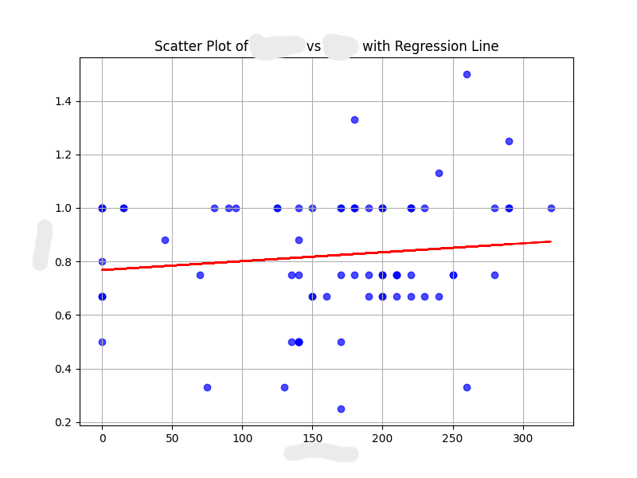
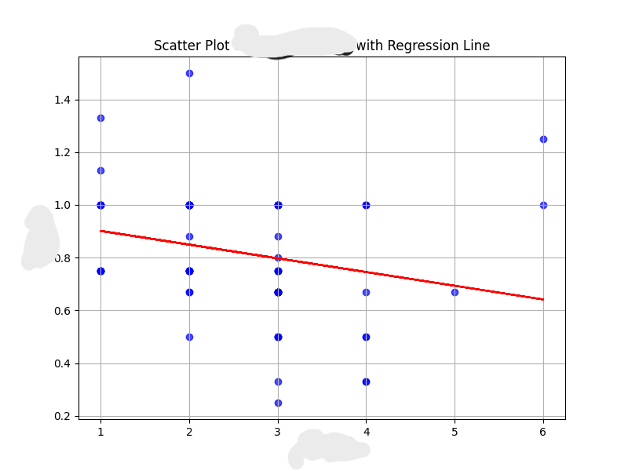
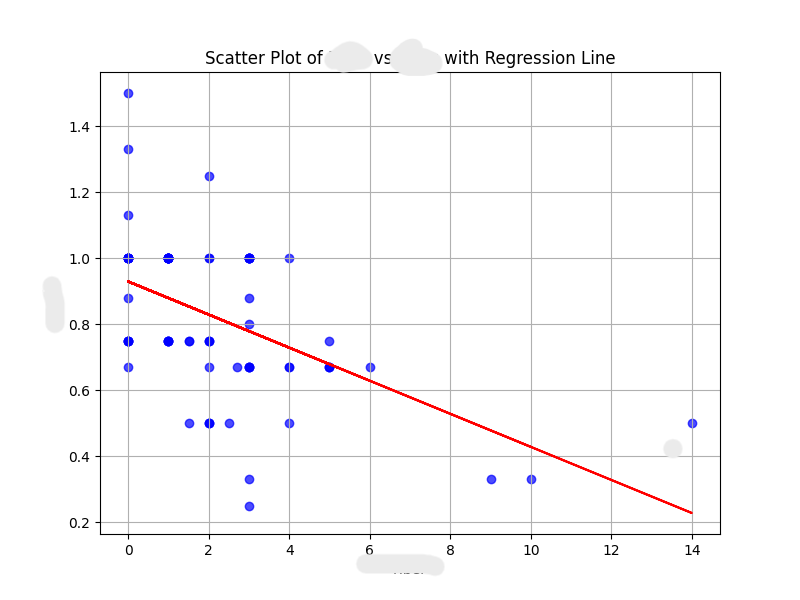
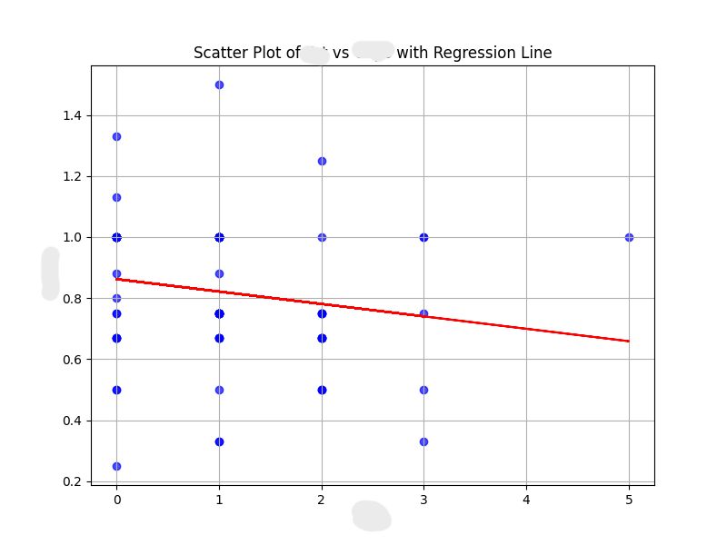
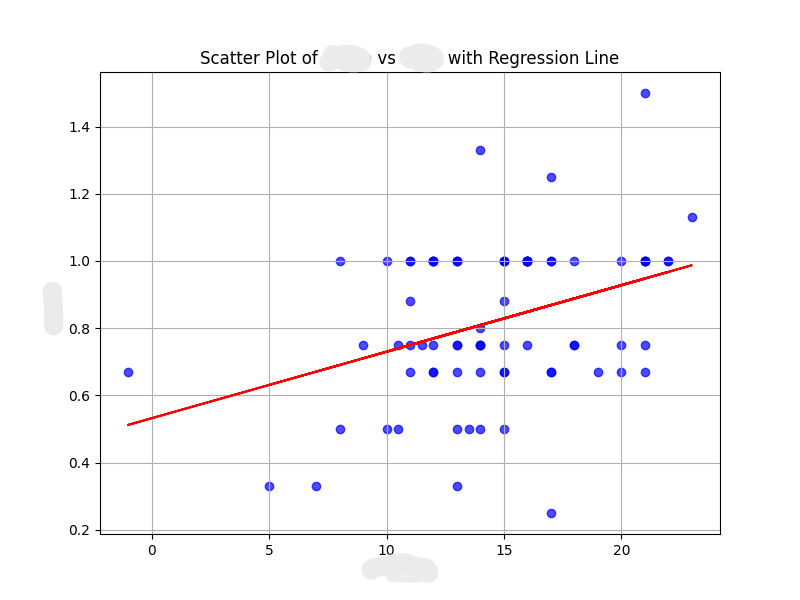
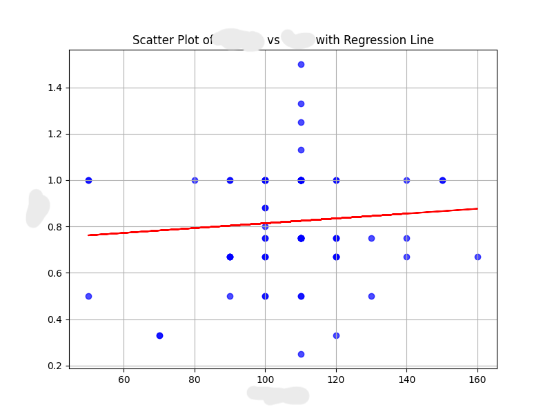

Description
This project provides Python scripts for loading, cleaning, and performing descriptive statistics on datasets. It includes features like data cleaning, statistical analysis, visualizations, and automated report generation to help users understand dataset patterns and characteristics.
Objectives Completed
- Integrated Kaggle datasets for analysis.
- Performed descriptive statistics including mean, median, and standard deviation.
- Created visualizations such as scatter plots and correlation heatmaps.
- Implemented clustering and regression models for deeper insights.
- Generated automated summary reports for datasets.
Analysis Process
The dataset was interpreted and analyzed using the following steps:
- Loaded the dataset and examined its structure using
df.info()anddf.describe(). - Handled missing data by filling or dropping values as appropriate.
- Removed duplicate rows and converted data types for consistency.
- Performed feature engineering, scaling, and normalization for better model performance.
- Visualized key insights using histograms, bar plots, and correlation heatmaps.
- Summarized findings and provided actionable recommendations for stakeholders.
Reference Architecture





